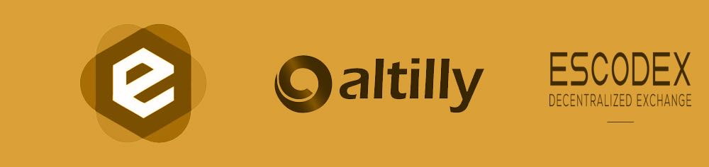

much moon! $DOGP Dogecoin Private gives you anonymous transactions, POS blockchain, Masternodes and more!
 |
|
Mac .dmg | Linux .tgz 32 bit | Windows .exe 32 bit / 64 bit |
 Stay tuned we will be on an exchange soon ;) We recommend at least 1000 $DOGP for staking in your wallet. |
Simply open your wallet and minimize and leave it open all day and you will start to earn $DOGP :-) |
Reddit | Twitter @PrivateDOGP | Telegram |
|
Simple Tutorials [All links open up in Reddit] - How do I start staking and mining Dogecoin Private (DOGP)? - How can I run a node on a Raspberry Pi for Dogecoin Private? - etc |